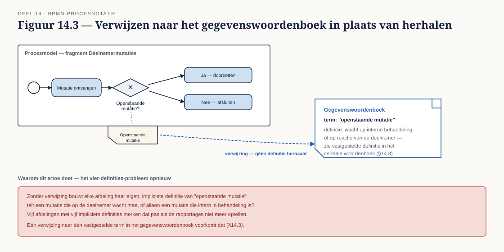

Deel 14 — BPMN gevorderd II: data, resources en semantiek
Reader · Ductus-cursus BPMN, CMMN & DMN · niveau 2 (praktijk) · deel 14 van 30 · studielast ± 7 uur
Dit materiaal bereidt voor op het examen OCEB 2 Business Intermediate van de Object Management Group en op het BPM+ Certificate van BPMInstitute.org. Het is geen vervanging van het officiële examenmateriaal.
Leerdoelen
Na dit deel kun je:
- Data in BPMN correct modelleren: data objects, stores, inputs/outputs, associations, item-aware elements.
- Data state gebruiken en de relatie leggen met het informatiemodel van de organisatie.
- Resources en performers modelleren, inclusief de relatie met autorisatie.
- Multi-instance in detail toepassen: cardinaliteit, completion condition, instantiedata.
- Onderscheid maken tussen modelleerstijl voor mensprocessen en voor systeemorchestratie.
- Een ontwerp bijstellen op basis van een concrete legacy-beperking, en die bijstelling verantwoorden.
14.1 Data in BPMN volledig
Niveau 1, deel 3, §3.6 introduceerde data object, data store, tekstannotatie en group als bewust spaarzaam te gebruiken elementen. Op dit niveau, waar een model daadwerkelijk een specificatie voor een bouwteam wordt (niveau 1, deel 1, §1.4), verdient data een vollediger behandeling.
- Item-aware elements — het overkoepelende begrip voor elk element dat "iets" draagt: een data object, een data input, een data output. Ze delen een gemeenschappelijke eigenschap: een itemDefinition die vastlegt wat voor soort gegeven het is.
- Data input/output op procesniveau — waar data objects binnen één proces leven, tonen data inputs en outputs wat een (sub)proces van buitenaf ontvangt en oplevert — relevant zodra je met call activities werkt (niveau 1, deel 3, §3.3) en precies wilt specificeren wat er de grens over gaat.
- Data associations met transformaties — een data association kan meer zijn dan een simpele pijl; hij kan een transformatie-expressie dragen die aangeeft hoe de ene datavorm naar de andere wordt omgezet. Dit is met name relevant op het raakvlak met het legacy-systeem (§14.7), waar het interne format van Meridiaan niet één-op-één overeenkomt met wat het koppelvlak levert.
14.2 Data state
Een data object kan een state dragen: "Aanvraag [ontvangen]", "Aanvraag [beoordeeld]", getoond als een label tussen vierkante haken bij het data object.
Wanneer dat verheldert. Als dezelfde soort data door het proces heen van betekenis verandert — en die verandering relevant is voor het begrijpen van het model — voegt een state toe. Een goedkeuringsproces waarin "Aanvraag [in behandeling]" overgaat in "Aanvraag [goedgekeurd]" toont in één oogopslag waar de belangrijkste transitie zit.
Wanneer het vervuilt. Een state bij elke denkbare tussenstap, of een state die feitelijk hetzelfde zegt als de activiteit ernaast al zegt ("Aanvraag [beoordeeld]" naast een activiteit "Aanvraag beoordelen"), voegt niets toe en vult het diagram met ruis. De vuistregel: gebruik state alleen waar de toestand van de data zelf het aandachtspunt is, niet als herhaling van wat de activiteit al vertelt.
14.3 Raakvlak met het informatiemodel
Het procesmodel toont gegevens, maar definieert ze niet — die definitie hoort bij het informatiemodel van de organisatie (conceptueel, logisch, fysiek datamodel), niet bij elk procesmodel afzonderlijk. Deze scheiding is dezelfde scheiding van zorgen die door dit hele curriculum loopt (niveau 1, deel 1, §1.2), nu toegepast op data.
Het vier-definities-probleem, opnieuw. In niveau 1 werd het voorbeeld van "actieve deelnemer" bij Meridiaan behandeld: vier definities naast elkaar, elk met een eigen aantal. Bij het Programma Mutatieplatform speelt een vergelijkbaar probleem met "openstaande mutatie" — telt een mutatie die wacht op een reactie van de deelnemer mee, of alleen een mutatie die intern in behandeling is? Vijf afdelingen die elk hun eigen procesmodel bouwen, lopen het risico vijf eigen, impliciete definities te hanteren zonder dat iemand het merkt totdat de rapportages niet meer optellen.
Dit deel behandelt het raakvlak met het informatiemodel zelfstandig en volledig, zonder een datacursus te veronderstellen: een procesmodel verwijst naar een begrip in het gegevenswoordenboek (of, bij ontbreken daarvan, naar de modelleerrichtlijn uit deel 11, die een plek voor zulke definities kan bieden) in plaats van de definitie zelf te herhalen. Waar geen gegevenswoordenboek bestaat, is het opstellen van minstens een lokale begrippenlijst voor het programma een verantwoorde investering — de kosten van het ontbreken ervan zijn in niveau 1 al gedemonstreerd.
14.4 Resources en performers
Een activiteit wordt uitgevoerd door iemand of iets — een performer. BPMN staat toe dit expliciet te maken via resources: een rol, een organisatie-eenheid, of een specifiek systeem, gekoppeld aan een activiteit.
De relatie met autorisatiemodellen. Een resource in het procesmodel is niet hetzelfde als een autorisatieregel in een systeem, maar de twee horen consistent te zijn. Als het procesmodel toont dat de rol "Senior behandelaar" een bepaalde goedkeuring uitvoert, en het systeem staat die goedkeuring toe aan iedereen met de rol "Behandelaar", is er een discrepantie die vroeg of laat een probleem oplevert — hetzij een controle die feitelijk niet wordt afgedwongen, hetzij een medewerker die terecht een taak niet kan uitvoeren die het model wel aan hem toeschrijft.
Functiescheiding als modelleervraagstuk. Waar twee activiteiten bewust door verschillende personen moeten worden uitgevoerd (bijvoorbeeld: wie een mutatie invoert, mag hem niet ook goedkeuren — een klassieke functiescheiding in een financiële omgeving), is dat een expliciete modelleerkeuze: twee verschillende lanes, met de resource-toewijzing die het verschil aantoont. Dit onderwerp komt in niveau 3, deel 26 (compliance, risk en control in modellen) terug op architectuurniveau; hier volstaat het herkennen dat de keuze in het procesmodel zichtbaar moet zijn.
14.5 Multi-instance in detail
Niveau 1, deel 4, §4.6 introduceerde multi-instance met de completion condition als het punt dat het vaakst wordt vergeten. Op dit niveau werk je dat volledig uit voor een realistisch scenario.
Cardinaliteit bepalen. Hoeveel instanties zijn er, en is dat aantal vooraf bekend of afhankelijk van de data (bijvoorbeeld: het aantal dienstverbanden van een deelnemer, dat per geval verschilt)? Dit bepaalt of je met een vaste cardinaliteit werkt of met een expressie die het aantal instanties ten tijde van uitvoering berekent.
Completion condition ontwerpen. Niet alleen "alle" of "een vast aantal", maar een expressie die kan verwijzen naar de uitkomst van de instanties zelf — bijvoorbeeld: stop zodra drie van de vijf comitéleden hebben goedgekeurd, ongeacht wat de resterende twee doen.
Instantiedata: wat elke instantie meekrijgt en teruggeeft. Elke instantie van een multi-instance activiteit werkt met een deel van de verzameling (de input) en levert een eigen resultaat op (de output), dat na afloop weer wordt samengevoegd tot één geheel. Dit samenvoegen — bijvoorbeeld: het totale aantal opbouwjaren over alle dienstverbanden van een deelnemer — is zelf een ontwerpvraag: welke aggregatie is correct, en wat gebeurt er als één instantie een afwijkend resultaat oplevert?
14.6 Mensproces versus systeemorchestratie
Dezelfde BPMN-taal, twee heel verschillende toepassingen, met een eigen modelleerstijl voor elk:
Mensproces. Grovere granulariteit (één activiteit kan een geheel van kleinere handelingen omvatten die niet apart gemodelleerd worden), ruimhartiger foutafhandeling (een mens kan improviseren waar een expliciet pad ontbreekt), en een expliciete aandacht voor wat er getoond wordt aan wie — een model dat een medewerker moet lezen, oogt anders dan een dat alleen voor specificatiedoeleinden dient.
Systeemorchestratie. Fijnere granulariteit (elke systeeminteractie is een aparte, expliciete stap), strikte foutafhandeling (elk mogelijk foutscenario moet een pad hebben — een systeem improviseert niet), en volledige technische precisie in expressies en connectorconfiguratie.
De praktische consequentie. Een deel van het Mutatieplatform (Deelnemer- en Werkgevermutaties) leunt zwaar naar systeemorchestratie; een ander deel (Klachten & Bezwaren, Bijzondere Situaties) blijft grotendeels mensproces, ook al zit er ergens een geautomatiseerde stap in. Eén modelleerrichtlijn (deel 11) die geen ruimte laat voor dit verschil in stijl, levert voor de ene helft van het programma een te grofmazig model op en voor de andere helft een onleesbaar gedetailleerd model.
14.7 Legacy als ontwerpbeperking
Het polisadministratiesysteem van Meridiaan is 35 jaar oud. Het koppelvlak ernaartoe stelt harde grenzen aan wat een procesontwerp kan doen — grenzen die op de tekentafel niet zichtbaar zijn totdat je ze expliciet opzoekt.
Typische beperkingen van een dergelijk koppelvlak: batch-verwerking in plaats van realtime (een mutatie die "direct" lijkt in het procesmodel, wordt in werkelijkheid pas de volgende nacht verwerkt), een beperkte set toegestane wijzigingen per aanroep (waardoor een schijnbaar simpele mutatie in werkelijkheid meerdere aanroepen vergt), en een ontbrekend of onvolledig foutantwoord (het systeem meldt niet altijd waarom een aanroep faalde, wat foutafhandeling in het procesmodel bemoeilijkt — een direct raakvlak met §13.4).
Wat dit voor het procesmodel betekent. Een elegant ontworpen proces dat uitgaat van realtime bevestiging, sneuvelt op een systeem dat pas de volgende ochtend antwoord geeft. De consequentie is niet dat je het ontwerp weggooit, maar dat je het aanpast — bijvoorbeeld door een expliciete wachtstap met een timer event op te nemen, of door de deelnemer een voorlopige in plaats van definitieve bevestiging te geven. Dat is een compromis, en een compromis dat je moet kunnen verantwoorden: waarom is dit acceptabel, en wat is de consequentie voor de doorlooptijd die je in deel 12 hebt geanalyseerd?
Kernbegrippen
Item-aware element — elk element dat een gegeven draagt (data object, input, output) · Data state — de toestand van een data object, getoond tussen vierkante haken · Resource / performer — wie of wat een activiteit uitvoert · Functiescheiding — het bewust scheiden van uitvoerende rollen over twee activiteiten · Cardinaliteit / completion condition / instantiedata — de drie ontwerpvragen van multi-instance · Mensproces versus systeemorchestratie — twee modelleerstijlen binnen dezelfde taal · Legacy-koppelvlak — een bestaand systeem dat harde grenzen stelt aan een nieuw ontwerp
Examenrelevantie — OCEB 2 Business Intermediate
Data en resources in BPMN zijn onderdeel van de uitgebreide modelleervaardigheid die op Intermediate-niveau wordt getoetst, met name in scenario's waarin een procesmodel op basis van gegeven data-eisen beoordeeld of aangevuld moet worden.
Leeswijzer bij de specificatie
- BPMN 2.0.2 — het hoofdstuk over Data (item-aware elements, data associations), het hoofdstuk over Resources en Performers, en de sectie over Multi-Instance binnen het activiteitenhoofdstuk.
Figurenlijst


